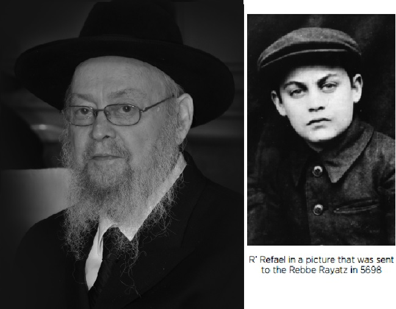

Passing of a Loyal Chassid
R ’ Refael (Fole) Wilschansky ’ s refined face did not disclose the tremendous suffering he endured in life. * From his childhood in underground yeshivos in Kursk and Berditchev, escaping a Soviet orphanage and his wanderings during World War II. * He finally left Russia in 1947 and was one of the first Chassidim to arrive in Paris, where he served the public and helped many refugees by direct instructions of the Rebbe Rayatz. * Part I

When Refael was two, the family moved to Verkhnodniprovsk near Dnepropetrovsk. Behind the house his family lived in there was a large yard and a well in the center, from which they would fill a large barrel that was in the kitchen.
“I once climbed on the barrel and I suppose the cover was not on securely because I fell in. My older sister ran to my mother and screamed, ‘Folke is drowning!’ My mother did not understand what was going on but she followed her. When she realized what had happened, she rescued me from the barrel and held me upside down by my feet and shook me. Water began coming out of everywhere. Then she took some of my grandfather’s snuff and stuck it in my nose which made me sneeze. That got out the rest of the water.”
There wasn’t much money to be made in Verkhnodniprovsk. His father would sit all day in the shul and wait for someone to come and ask him to shecht but the community was small and not many came.
Having no choice, the family moved again, this time to Voronezh where some of the T’mimim stayed with them. R’ Betzalel asked them to teach his son Torah. When Refael was ten, he started learning Torah with the bachurim, Michoel Teitelbaum, Sholom Vilenkin, and Yisroel Levin.
THE WANDERING LIFE BEGINS
When Refael turned twelve, in Cheshvan 5697, he went with Yisroel Levin to the secret yeshiva in Kursk, a night’s journey away. During those terrible years, the T’mimim were scattered in small groups throughout the Soviet Union where they learned secretly. Only five students learned in Kursk then, with one of the older ones teaching the others.
After a short break for Pesach, Refael went to Berditchev where he continued learning underground. Now and then his grandmother sent him food and clothing.
In Berditchev there were no Chabad families but it was full of religious Jews and Chassidim from other courts; Chernobyl, Boyan, Makarov, Ruzhin. About 80% of the residents of Berditchev were Jews and the signs on the stores were in Ukrainian and Yiddish. Most of the Jews were old; you hardly saw young people on the street. This was why the NKVD’s vigilance was relatively weak there.
The Ohel of the tzaddik R’ Levi Yitzchok is in the Berditchev cemetery, and the T’mimim would go there to pray that Hashem protect them. Not far from there was the wooden Ohel where the Makarover Rebbe was buried. The residents of the town said that a fire once broke out at the Ohel and one of the firemen who came to put out the fire mockingly said: “The Jewish rabbi was saved.” Inexplicably, he then fell into the fire and was burned.
Although at that time in Russia there were hardly any shuls, with one shul each in Moscow and Leningrad, in Berditchev it was completely different. Thirty-one shtiblach operated daily. Among them was “Dem Rebbe’s Kloiz” – the shul of the tzaddik R’ Levi Yitzchok.
A secret branch of Tomchei T’mimim opened in Berditchev. R’ Refael related:
“We would go to the Litvishe shul in the morning, go up to the women’s section – the way up was outside, and the windows were opaque. The shamash would close the door from the outside and we would sit up there quietly so nobody could tell we were there and R’ Moshe Robinson would teach us Gemara.
“Two hours later, the shamash would open the shul and we would slip out, two by two, to other shuls like the Mishnayos Kloizel, Chernobler Shul, Makarover Shul, Kochniovka (for the street it was on) and others, and we would review our learning.
“I remember that in the Chernobler Shul there were still old, venerable characters who sat and sang during the third Shabbos meal. I was once there in the shul and I leaned on the wall and hummed something to myself. On the side were some old men who heard me and said to themselves, ‘If Nissan Belzer (a Tolna Chassid and famous chazan) would hear him, he would have him try out for the choir …’
“We tried as much as possible not to be seen on the streets in fear of the wrong people noticing us. This was especially so after an article was printed in the Shtern which was published in Kiev, that grumbled about there still being traitors in Russia and it said, for example, there is an underground yeshiva operating in Berditchev …
“We were eight boys of different ages. Six of us were bar mitzvah age to fifteen and two were older. R’ Moshe Robinson and R’ Berel Gurevitch made us ten. That was the largest number of talmidim in one division of Tomchei T’mimim at the time. We all learned together in one class and somehow each small group learned on its level.”
THE BOYS ARE ARRESTED
On Monday night Parshas VaEira, 24 Teves, 5698, the hilula of the Alter Rebbe, the boys gathered together with their roshei yeshiva for a farbrengen in the Kochniovka Shul. Under the shul’s wooden floor was a cellar full of scrap iron and old chairs. That is where they farbrenged in honor of the day. They all felt confident they would not be discovered in that kind of place.
There was some mashke on the table, halva and herring, and they farbrenged with R’ Moshe Robinson and R’ Berel Gurevitch. Refael was the youngest of the ten.
The farbrengen went on for a few hours and at two in the morning they heard loud banging on the door of the cellar.
“We were terrified, having no doubt who was knocking. Unexpected guests… We did not open the door but immediately stopped the farbrengen and hid in the back section of the cellar which was full of junk.
“When they saw that we were not opening the door, they broke in and began searching for us. It did not take long until they found us. They took us out, one by one, and policemen with rifles led us to the police station. It was a cold, snowy night. As we passed the city park, we saw the gravesite of the tzaddik Reb Lieber the Great (the tzaddik who founded Jewish Berditchev) in the distance, and in our hearts we asked him to pray and arouse mercy for us.”
The boys spent the night on chairs at the police station. The next day they were taken to the NKVD cellar. They were divided into two rooms, the younger ones and the older boys. Refael and another five were in one room, with the oldest among them Heschel Tzeitlin, only fifteen years old. At this young age they were not of age to face prosecution.
Every day, they took the boys for interrogation in order to get them to admit they had been studying Torah. “None of us admitted,” said R’ Refael. “We said we had run away from home and met in the cellar to eat and drink something. The interrogations were exhausting and took a long time.
“Two Jewish interrogators dealt with us. When I was called for an interrogation, they put me in front of R’ Moshe Robinson and he told me, in front of them, to admit that he learned with us. But I denied it. I knew that he was coerced into saying that. One of the interrogators angrily said: How dare you not be ashamed to make your teacher into a liar? But I continued to deny it. I said: He is not my teacher and I don’t know why he said that.”
Later, when R’ Moshe Robinson was put into their room, he said that he had admitted and taken all the responsibility and the boys could say that he learned with them. But regarding the organization of the yeshiva and the money to sustain it, we should continue saying that we don’t know from where and who it came from.
Refael and his friends spent five weeks in the NKVD cellars where they were under constant guard. They slept crowded on the floor and were given 400 grams (less than a pound) of bread a day, two sugar cubes, and hot water twice a day. They were allowed to walk around outside under police guard for twenty minutes and could not stand in one place but had to keep moving. During these five weeks they were taken only twice to the bathhouse where their clothes underwent disinfection.
Then the boys were taken as a group to a “children’s home” for “rehabilitation.” This orphanage had many children whose parents were arrested and sent to Siberian labor camps for crimes against the state.
The orphanage was situated on a large piece of land surrounded by many trees. Their material circumstances improved greatly. They could eat their fill of bread and butter and could stroll about. The six boys were different than the other children in that they refused to go about bareheaded and did not join the others’ games.
The children’s home was five kilometers away from Berditchev. One day, Refael and his friends asked permission to visit Berditchev to get their things. Permission was granted on condition that they went in twos, not all together. On this trip they secretly brought back small pairs of t’fillin and there, among the trees, they put the t’fillin on every day.
ESCAPE
Refael and his friend Refael Brook went on one of these visits. They were walking on the street where R’ Levi Yitzchok’s shul was when Refael Wilschansky suddenly noticed the Chassid, R’ Michoel Teitelbaum. He had come with mesirus nefesh to the lion’s den. His head was wrapped in bandages to hide his beard. The two boys passed him so he would notice them. He motioned to them to enter the shul where he whispered that he had come to rescue them. He quizzed the boys about the orphanage’s schedule so he would know how to arrange their escape.
When he met with them again, he told them he had a plan to get them out. There was a large train station nearby and he prepared train tickets in pairs, each pair for a different location, on a different train.
The day of their escape was set for Shabbos. “R’ Michoel told us that R’ Mordechai Eliezer Lapatovsky paskened that the escape should be carried out on Shabbos so that the merit of Shabbos would stand by them. We furtively left the orphanage toward evening and taking a roundabout route lest we get caught, we reached the train station where R’ Michoel was waiting for us. He gave each pair their tickets and that is how we got away and were saved from the orphanage.”
Refael Wilschansky and Refael Brook were supposed to go to Kiev where his mother waited for him. “We boarded a train and traveled for over an hour. When the conductor came for the tickets he asked us where we were going. We nervously said Kiev. ‘Kiev?’ he said in surprise. ‘You are heading in the wrong direction. Get off at the next stop and wait for the train going the other way.’
“We got off in a forsaken village called Kazatin and it was already Motzaei Shabbos. The area of the station was dark and we found a coffee house with some drunks, davened Maariv, bought soda and made Havdala with it. Then we went back to the train station and boarded a train going to Kiev.
“R’ Michoel endangered his life to save us, since he was the one who convinced our parents to send us to learn Torah. He felt responsible to free us.”
All this did not deter R’ Refael. After Pesach he continued learning Torah and Chassidus under the supervision of Sholom Vilenkin in a rented apartment in the suburbs of Voronezh. His wandering did not end and he continued from there with his friends to Kursk, where they learned in the homes of “dear people who hosted us without considering the great personal danger involved.”
TOMCHEI T’MIMIM DURING THE WAR
R’ Refael continued his wanderings with his friend R’ Heschel Tzeitlin at the beginning of Shvat 5700/1940. They journeyed to Kutais in Georgia where there was already a branch of Tomchei T’mimim. He had a special memory of this time as he related:
“There in Kutais we saw something that to us was astounding. I remembered that in my childhood in Russia we had a picture of the Rebbe Rayatz, but we only saw it two times, when my father took it out of the binding of a book and showed it to us and then immediately hid it again, since it was very dangerous to have this picture. In Kutais, the shamash of the shul openly announced that pictures of the Rebbe Rashab and Rebbe Rayatz could be bought!”
R’ Yosef Goldberg headed the yeshiva in Kutais. He was devoted to the material and spiritual needs of the bachurim. The bachurim learned in two shuls and he would go back and forth and check to see what they were eating. When he saw that they were eating food that was too plain he would tell them to buy healthier, better food.
“I remember that when we arrived in the city for the first time, he told us that each of us would get a sum of money each week and he figured out that with this amount we could buy two eggs, milk and cheese every day, and he starting enumerating what could be bought with the money. I smiled when I heard him and he blushed slightly and immediately said he did not want to tell us what to buy, but he meant that we should buy good, healthy food. He worried about us with all his heart and might.”
At a certain point, the talmidim dispersed to different Georgian towns: Kulashi, Senaki, Zugdidi and Sukhumi.
After Pesach 1941, when R’ Refael was sixteen, he had to get an ID card. He decided to get one in Voronezh, which entailed a week’s journey by train. On the way, he had to stop for a full day in Rostov in order to change trains.
In Rostov there were Jews who knew his family, and this is why he invited himself to the home of R’ Nachman Lokshin where he was warmly welcomed. After Shacharis and breakfast, he asked his host where the mikva was. R’ Nachman reacted with surprise, “Why do you need to know?” R’ Refael said because he remembered how in his childhood his father took him to the Ohel of the Rebbe Rashab, and his father went in and he remained outside. “Now I want to go to the Ohel and so I need to immerse.”
However, his host exclaimed, “Where are there mikvaos today? The communists closed all the shuls and mikvaos.” R’ Refael said resignedly, “Then I will go to the river and immerse.” (He was referring to the River Don that was near the house.) However, his host tried to convince him not to go because a Jewish boy who immersed was likely to arouse attention. R’ Refael did not understand this and said, “Gentile boys swim and play in the water all the time; who will notice me?” But R’ Nachman was not convinced. He finally said, “You can’t go to the Ohel because you ate and you don’t go to the Ohel after eating.”
R’ Refael later said, “I had nothing to say in response to that. I stayed in his house all day and then in the evening went to the train station to continue my journey. Some time later I found out that there was in fact a mikva in Rostov. Its entrance was under the very table on which I had eaten breakfast! There was a trapdoor in the floor which opened when necessary. If my host would have been caught he would have been sentenced to years or worse.”
The war between Russia and Germany broke out two months later. R’ Nachman’s family remained in Rostov and they all perished by the cursed Nazis.
The danger in telling a secret to a teenage boy was indeed great, as R’ Refael recounted:
“I once took a train from Sukhumi to Kutais and a plainclothes policeman came into the compartment and told me to follow him. I had a small suitcase with me with a Gemara and t’fillin. The policeman took me to the cubicle of the supervisor of the compartment and ordered me to open my suitcase where he discovered the Gemara. ‘What’s this?’ he asked. I told him it’s a book of the Talmud written in Lashon Ha’kodesh. He asked me whether I learned from it and I said no. ‘Then why do you have this book with you?’ he asked. I said that someone gave it to me and I was taking it for him. He asked me again whether I knew how to read it and I said yes. ‘What does it say?’ he persisted. I said I didn’t know. ‘How could that be when you say you know how to read it?’ I said, ‘I know how to read but I do not understand the content.’ I said I also know how to read Georgian but did not understand it. He gave me a Georgian newspaper and he could see that I was indeed literate in Georgian and so he let me go.”
FEAR BY DAY AND NIGHT
With the outbreak of war, the bachurim who had been dispersed to various cities throughout Georgia decided to join together again in Kutais. There were close to twenty of them. Since nobody knew what the morrow would bring, they decided to remain together. At night they slept in various hiding places so they wouldn’t be caught by the “draft hunters” who searched for boys of draft age.
“Moshe Morosov and Moshe Nisselevitch would sleep in the attic of the mikva. They once arrived there in the middle of the night and heard that someone was there. They were terrified. It turned out it was just another bachur who had decided to hide there. I once slept in the shul behind the bathhouse and I was very, very scared.
“There was one apartment where I, Heschel Tzeitlin and Moshe Morosov often hid. One night we heard the draft hunters approaching. Moshe immediately ran outside. He got to the street and hid somewhere. It was a miracle. They came to the house and we opened the door. We were in grave danger because we had illegal sums of money and documents. All of this was hidden in a hole in the ground. If they had found it, it would have ended most unpleasantly, to say the least.
“We saw miracles like this several times. On Shmini Atzeres 5704 we went to farbreng with R’ Shmuel Notik in the home of R’ Moshe Neimark. He had a sukka. It began to pour and we all went up to his house where we continued to farbreng. Two policemen from the military police suddenly entered the house. R’ Sholom Mendel Kalmanson, who was drunk, went to greet them and began singing ‘Nyet, nyet,’ and they took it to mean there is no one but Stalin, so they turned around and left.”
Because of the war, the bachurim suffered from starvation. This was aside from the fact that they had to stay in hiding and could not be seen outdoors. A bachur by the name of Moshe Lemberger helped them. He was a Belzer Chassid and he had been in the army. He encountered the T’mimim in his uniform and with a cane. He slowly gained their trust.
R’ Moshe was dynamic and within a short time he made connections with officials in all the city’s offices. He even dared to make contact with a senior NKVD official who was in charge of dealing with the black market and people were very afraid of him. One time, he got a flat tire and since it was wartime and hard to get another tire, R’ Moshe took the opportunity to contact him and say he would get him another tire.
In the vicinity of Kutais there was an army base, and there too he had contact with one of the staff who stole a tire from the warehouse and gave it to him. In this manner he had a lot of dealings in the black market, to the extent that the police itself would go and bring him black market merchandise.
Due to the famine, every citizen received a coupon for 400 grams of bread daily, while soldiers and their families were given double. R’ Moshe with his connections obtained quite a few of the 800 gram coupons, so the T’mimim had plenty of bread and could sell bread to others and use the money to obtain exemption papers from the army.
THE GREAT ESCAPE
After the war, when the situation improved somewhat, a yeshiva was established in Samarkand with about 200 talmidim. The mashgichim and mashpiim of the yeshiva included the likes of R’ Nissan Nemanov, R’ Zalman Haditcher, R’ Yisroel Noach Blinitzky, R’ Avrohom Eliyahu Plotkin, and R’ Zalman Shimon Dworkin. Anash in the city generously supported the talmidim of the yeshiva.
Some time later, the Russian government signed an agreement with the Polish government, that all Polish citizens who fled during the war to Russia could return to Poland. Tens of thousands of Polish citizens had been exiled to Siberia and other distant places and tens of thousands of others went to Central Asia, Tashkent, Samarkand, and Bukhara.
This was an opportunity to leave Russia under false Polish citizenship, for the persecution in Russia was terrible. Anash and the T’mimim lived in constant fear, being persecuted for their underground activities to preserve Jewish life. Whoever belonged to Lubavitch and to “Schneersohn” was accused of being anti-communist. The Chassidim’s fear was so ingrained that it became second nature, with nobody knowing what the next day would bring.
When it became possible to escape Russia, many of Anash traveled to Lemberg/Lvov where the Polish emigration office was and there they arranged papers with which to leave Russia. Numerous Lubavitcher families, including the Wilschanskys, went to Lemberg to try their luck. R’ Leib Mochkin led the organization. He was acquainted with Polish government people who were involved in the emigration of Polish citizens from Russia. He worked along with a committee of senior rabbis and activists.
The Wilschansky family endured many travails on the long road to freedom. From Samarkand they took a train to Tashkent in order to go from there to Lemberg via Moscow. The normal length of the trip was twelve hours, but it actually took nearly two days until they reached Tashkent. From Tashkent to Moscow they experienced many more tribulations on a journey which took days. It was only when they arrived in Moscow that they could relax a little, when they were hosted by R’ Berel Rikman who lived in a suburb of Moscow.
“Of course we did not dare go outside so as not to cause our host problems. Only my father and he went to the nearby Malachovka shul on Shabbos. Despite all our precautions, R’ Berel told us years later that when he was arrested by the NKVD, one of the first accusations was that he had hosted R’ Betzalel Wilschansky and his family.”
They continued their journey from Moscow to Lemberg right after Shabbos, armed with documents that stated they were Polish citizens that fled to Russia during the war. With these papers they were supposed to get permission from the Polish emigration office to continue to Poland. When they arrived in Lemberg at the end of Av 1946, they gave their documentation to the escape committee so they could get emigration papers for them to go to Poland.
“R’ Leib Mochkin chose Mrs. Tzipa Kozliner to take all the documents to the emigration office. My brother Chaim Ber went along with her to observe how things went. She entered the emigration office and Chaim Ber stood at a distance and saw her leaving soon thereafter. He realized that something had gone wrong. She started yelling toward him that she needed to see Leibel Mochkin, but he saw two people heading in her direction and he motioned to her not to come over to him because she was being followed. Two people then pushed her into a car.
“They arrested her with all the documents she had and we remained without papers testifying to our Polish citizenship. All the work to arrange documents for more than two hundred people failed. Furthermore, the NKVD now had a list of all the names and pictures of people who were trying to escape over the Polish border.
“For my family in particular, the danger was acute since the papers for our family matched in every detail our real names and birthdays. So we had our Russian ID papers and at the NKVD they had papers with the identical information but claiming we were Polish citizens. You cannot imagine the dread felt by Anash of Lemberg. People were afraid to go out into the street. Nobody knew what would be.”
In the meantime, Tishrei passed and the committee continued its work, albeit with additional caution. The Wilschansky family went from one hiding place to another in fear of the police. One time, Refael was caught by a policeman:
“The policeman ordered me to accompany him to the police station. Think about what could have resulted from an arrest when they were after us, and our Polish papers with our pictures were at the NKVD offices. I began to plead with him to release me but he continued leading me to the police station. The entire way I continued begging him. In my pocket I had around 400 rubles and I took them out and gave them to him. He released me but warned me to leave the city.”
R’ Refael described the night they left:
“The train was going to leave Lemberg on Motzaei Shabbos. All day Shabbos, with the permission of the rabbanim, the committee prepared the families for the trip to the train station. However, when it came time to travel to the station, we discovered that everyone in my family had papers except for me. Leib Mochkin came to my aid. He had prepared an authentic, not forged, document for himself, but since he decided at the last minute not to go on this trip but to wait for the next one, he told me to come to him in the middle of the night so he could give me his papers. Despite being terrified of gangs of robbers, I went to him after midnight and he gave me his papers. I am eternally grateful to him and will never forget his devotion to a friend.”
The night of 9 Kislev, the train finally reached the border. The borders of Russia were known as the Iron Curtain and for good reason. Along the border was barbed wire fence and armed soldiers stood with murderous faces, glaring at anyone who approached the border. They were accompanied by large dogs that were ready to attack anyone and rip them to pieces.
“At a moment like this, each of us prayed that G-d have mercy on us and help that all go smoothly. When we arrived at the border, we were ordered to get out and by the light of searchlights they began to examine our papers and call out names. Whoever was found to be in order was told to get back on the train. At the moment of transition between arrest and being accused of betraying the motherland and freedom, there was enormous tension and fear.”
OUTSIDE THE
IRON CURTAIN!
On the 10th of Kislev, the Chag Ha’Geula of the Mitteler Rebbe, toward morning, the Chassidim crossed the border and arrived in Pshemshl in Poland.
“It is hard to describe the joy that we all felt. Hugs and kisses and tears of joy and thanks to Hashem that we were freed. We got off the train and entered a grocery store near the station. Our eyes lit up at the sight of shelves loaded with food and drink the likes of which we had not seen in Russia for so long. Our friend R’ Meir Itkin bought some bottles of vodka and it was merry!”
The journey wasn’t yet over. The refugees continued to Cracow and a few days later they crossed the border in the direction of Bratislava (Pressburg). The activists of the Bericha organization brought them to Vienna where they were set up in a large house in the American sector of the city.
“A new world was opened before us. Without fear we called the Rebbe Rayatz and following his instructions, each of us planned our lives under the new circumstances.”
SECRETARY OF THE LISHKA
The Rebbe Rayatz founded the “Lishka” (European Office of Refugee Aid and Resettlement) and appointed R’ Binyamin Gorodetzky to run it.
In Iyar 1947, R’ Refael and his family arrived in Paris. A short while later, R’ Gorodetzky asked R’ Refael to help him in the office. R’ Refael accepted the offer, intending to return and learn in yeshiva when it started again in Paris. In Tamuz he received a letter of blessing from the Rebbe Rayatz on his new position.
A short while later, when the yeshiva opened in Paris, R’ Refael wanted to leave his work and return to yeshiva, but another letter he received from the Rebbe instructed him to stay where he was. He remained there for decades.
In 1972 he moved to New York as the Rebbe instructed him to continue his work from there, which he did until the end of his life.
To be continued, G-d willing
S.Z. Levin. "Passing of a Loyal Chassid." Beis Moshiach, no. 1012 (March 10, 2016).